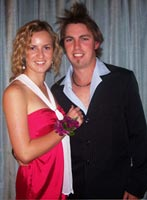
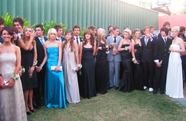

Tendenze in Australia
In this attività, you will be required to take part in a discussion and to express your point of view. For useful phrases to help you, refer to the following.
Il ballo – l’evento clou nella vita scolastica … oppure di panico?
Leggi i blog di questi studenti australiani che si trovano su un sito per studenti italiani.
- Use the green highlighter to highlight the phrases in the blog extracts that reflect your own point of view about the school ball.
- Use the red highlighter to highlight the points in the blogs with which you strongly disagree.
Nelle scuole australiane, il ballo è diventato ormai una tradizione dell’anno finale. Per molti studenti rappresenta uno degli eventi imperdibile della vita scolastica. Suscita un mare di emozioni! Serve ad unire i compagni di classe. Serve anche come un’evasione temporanea dallo stress che caratterizza l’ultimo anno di scuola. Ci sono prove a non finire e bisogna studiare senza tregua. Offre la possibilità agli studenti di scatenersi … almeno per questa magica serata alla grande!
È un’occasione per pianificare, di fare shopping per quell’abito particolare ed affascinante. Organizzare tutti i preparativi per quel giorno e poi arrivare al ballo con la mitica limousine! Quella sera c’è la sensazione di sentirsi maturi e ultra chic. Bisogna fare un sacco di foto per conservare per sempre questo evento memorabile.
Per concludere c’è la festa dopo il ballo che finisce alle ore piccole.
Passare una serata del genere insieme ai compagni di classe è piacevole. I ragazzi si rendono conto che le esperienze vissute in comune stanno arrivando alla fine. Sono momenti davvero magici e da apprezzare.
 
Commenti
Per alcuni studenti il ballo è andato oltre il limite. Rappresenta non solo una distrazione, ma un’esagerazione! Si dà troppo importanza ed enfasi a quest'evento. Le spese stanno arrivando alle stelle e non sono alla portata delle tasche di tutti! Ne derivano tensione e anche stress inevitabili per quelli che non si possono permettere tutti i lussi di questa serata.
Inoltre per gli studenti che sono piuttosto timidi e riservati è un evento che evidenzia la loro insicurezza. Per quelli che hanno dei problemi economici suscita la paura di fare brutta figura, di non essere all’altezza dei compagni, di essere out!
Alcuni vivono questa esperienza in modo negativo … forse anche in preda al panico!
Commenti
Answer the questions that follow.
Make a note of the phrases that you can modify to express your point of view on the topic. Write the modified phrase in the space provided.
Frasi nel blog Frasi modificate Do you think that the information in the blogs is a realistic portrayal of the ball?
Write a comment in response to the blogs. Justify your reasons.
Come è la tradizione nella tua scuola?
Discuss with other students the traditions and preparations for your school ball.
Discussion can be with students in Italian class.
If you have links with students in other schools you can take part in a chat/forum session.
Clicca qui for questions to help guide you with the discussion.
Audio CD – Track 2
Please upgrade your flash player. You can get the latest version here: http://www.abobe.com/flashplayer/
If you have already been to the ball, talk about your experience using the appropriate past tenses.
To help you prepare for the discussion, record your answers if you have recording facilities. It will help build up your confidence when speaking in Italian.

Some principals and parents are of the opinion that the expectations of the school ball have gone way over the top and that the cost is out of control.
Your school board is under pressure to take action and reduce the cost of the school ball extravaganza.
Write a report in which you outline the viewpoint of the student committee on this matter. Include some suggestions on the changes that can be made to reduce the school ball expenses.
Alternative
There has been a lot of negative media coverage lately on the cost of school balls. Principals and parents are concerned that this event has got out of hand and is creating an unrealistic expense for parents.
E tu cosa ne pensi?
Write a letter to the editor of the community paper in which you express your opinion on the topic. Provide reasons to support your view.
La settimana degli schoolies
Un altro fenomeno della vita scolastica che è un must, un’esperienza da non rinunciare è la settimana degli schoolies.
Questa tendenza mette in rilievo una vasta gamma di punti di vista.
Take part in a youth forum panel discussion on the topic of schoolies week.
You may also wish to consider the viewpoints of other members of the community, for example police officers, healthcare workers.
For ideas on how to approach this attività, watch the television program Insight on SBS. It provides a forum for expression of different viewpoints on topical issues. Check the TV guide for viewing times.
Before taking part in this attività do some brainstorming. You may already have a strong opinion on the topic but it’s a good idea also to consider different points of view.
Explore the issues involved with the leavers/schoolies week trend. Consider the viewpoints of students, parents and the public. Identify both the negative and positive aspects.
Clicca qui to write your thoughts on the topic. Some points have been provided to help you get started.
To prepare yourself thoroughly, record your views if you can. This will help you to become confident with the material when expressing your opinion on the panel discussion.
If you would like to find out about the Italian student scene, go to www.studenti.it and select Superiori.
Visit this site on a regular basis. It will keep you updated on the Italian student scene. It will also provide you with the authentic contexts you need to help you develop your viewing and reading skills.